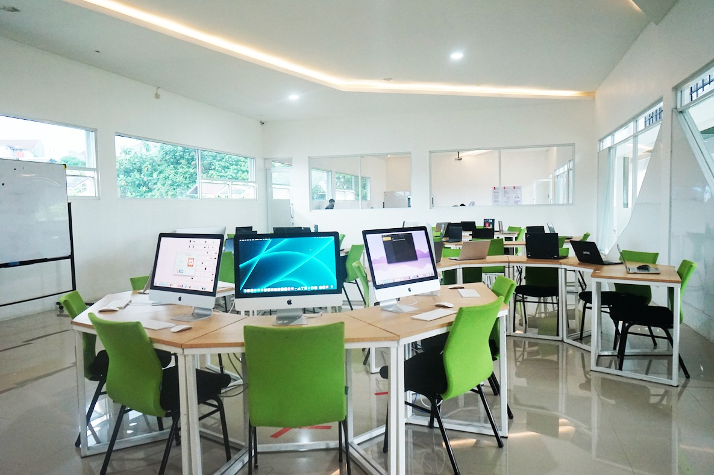
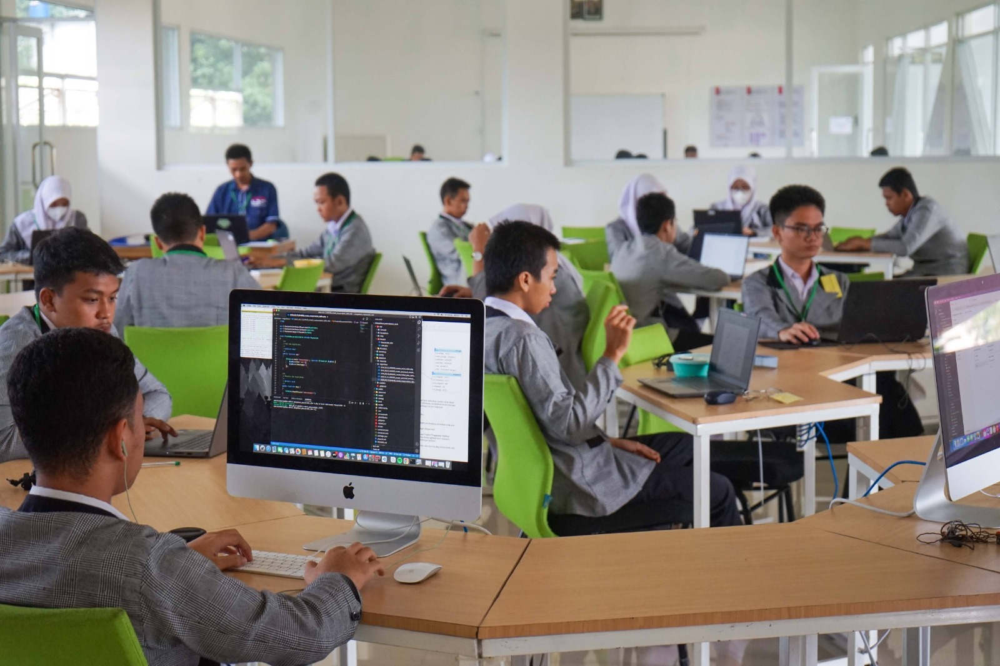
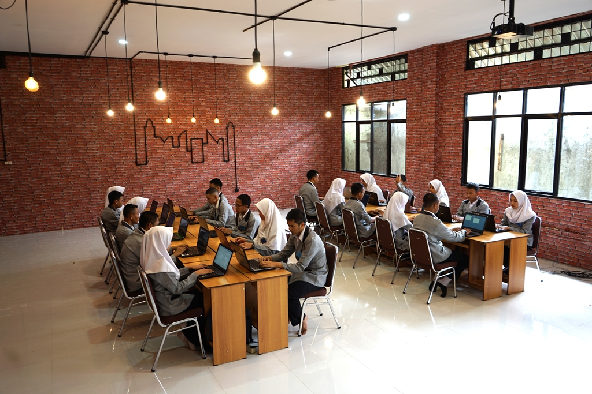
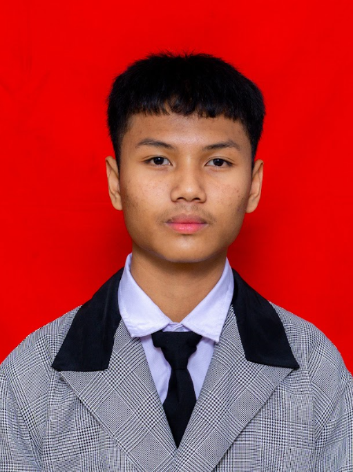
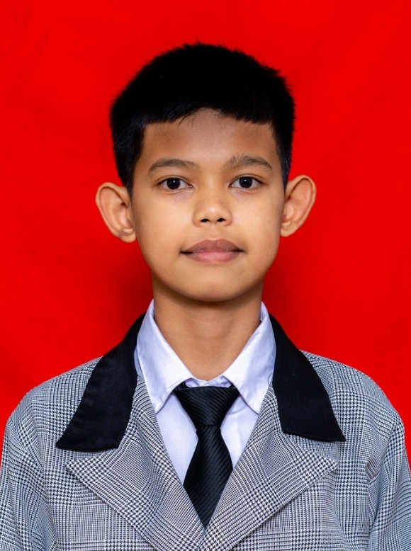
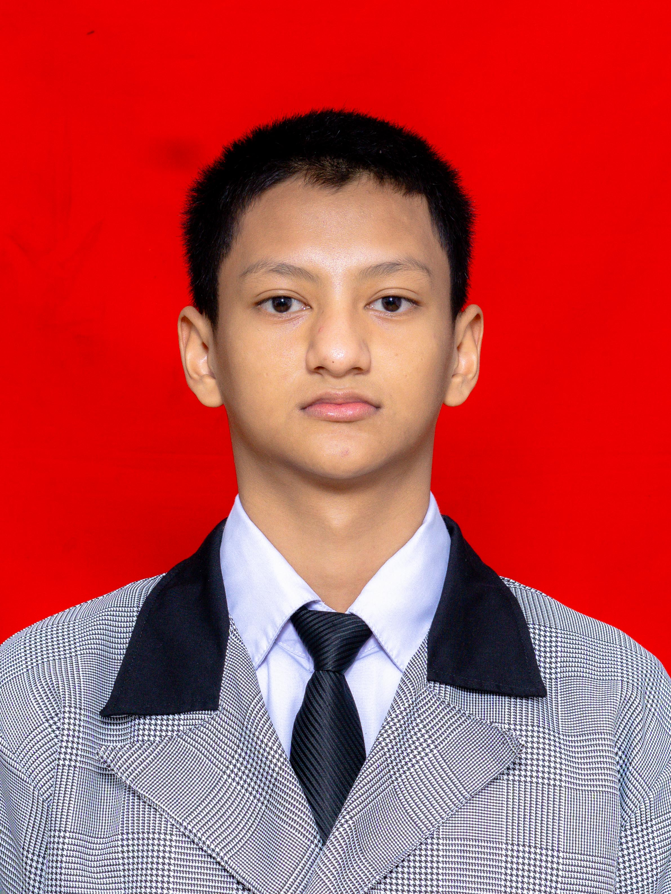
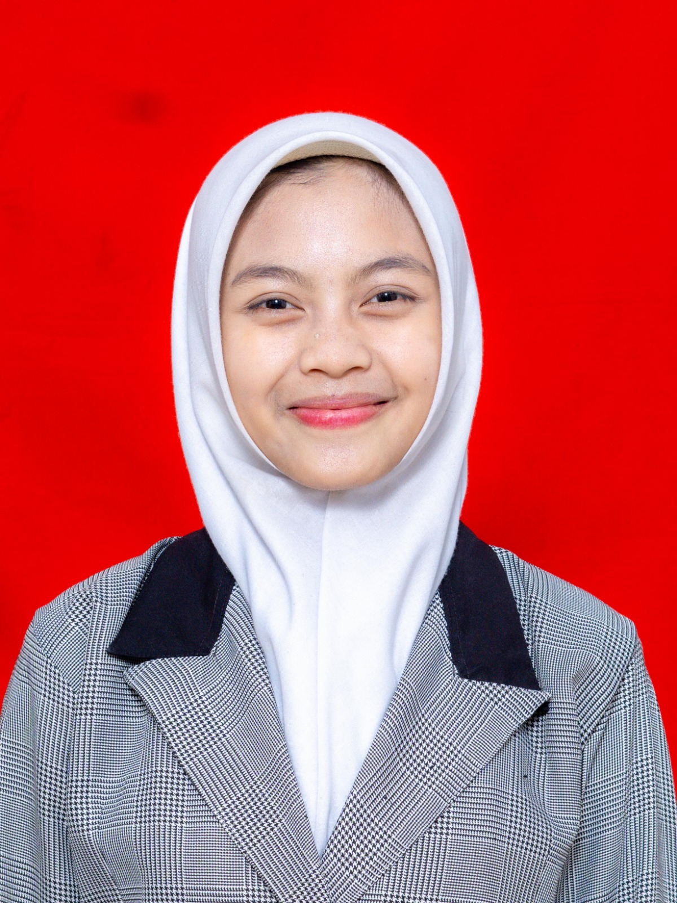
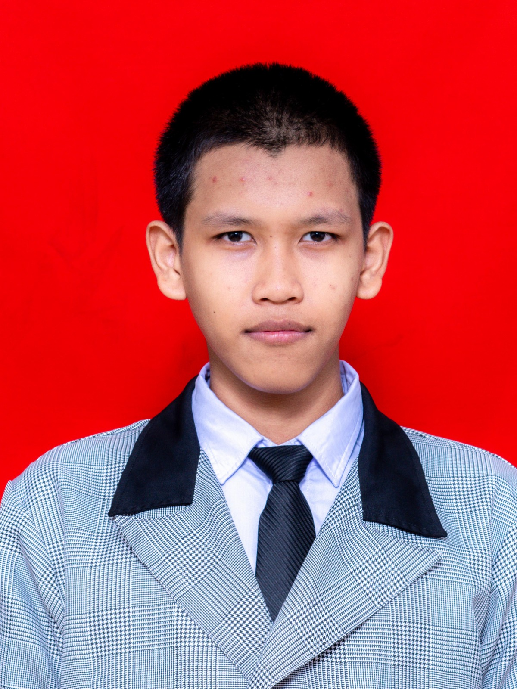
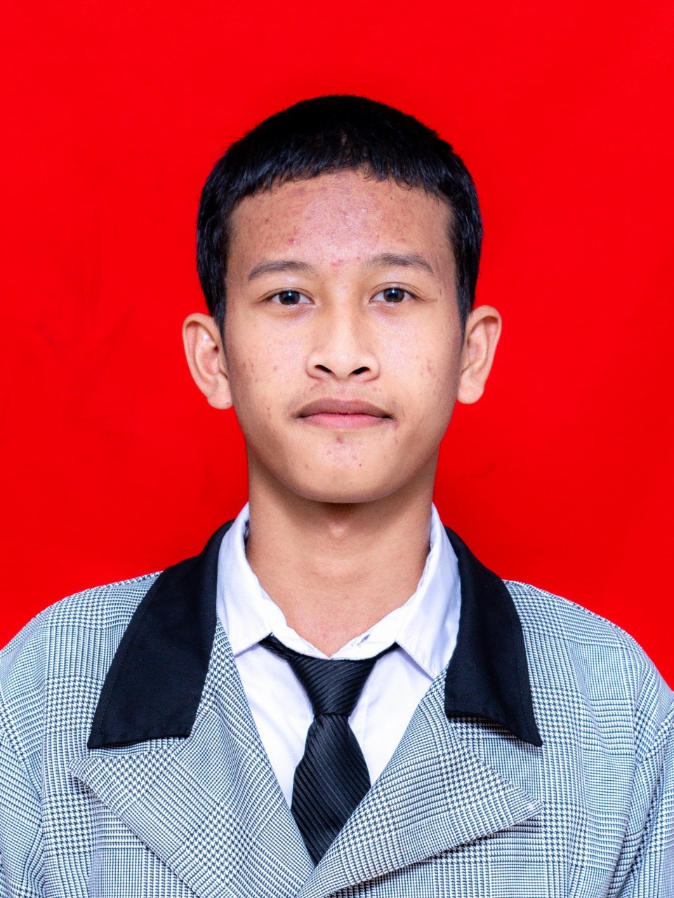

Ruang inovasi teknologi informasi di SMK Wikrama Bogor — tempat lahirnya talenta digital yang siap memimpin ekonomi kreatif Indonesia.
Program Keahlian Pengembangan Perangkat Lunak dan Gim (PPLG) di SMK Wikrama Bogor dirancang sebagai ekosistem belajar yang mendorong inovasi teknologi berbasis industri. Laboratorium kami bukan sekadar ruang kelas — ini adalah pusat kreatif digital.
Dengan fasilitas modern berstandar industri, siswa tidak hanya belajar teori, tetapi langsung mempraktikkan pengembangan software, web, jaringan, dan produk digital bernilai ekonomi tinggi.

Setiap ruangan dirancang dengan fungsi khusus untuk mendukung proses pembelajaran yang optimal.


Lab utama coding PPLG dengan iMac premium dan laptop siswa. Pencahayaan alami dari jendela besar menciptakan suasana kerja yang produktif.
Lab PPLG IMMOBI adalah ruang belajar khusus program PPLG di SMK Wikrama Bogor. Dirancang untuk mendukung kegiatan praktik dan pengembangan kompetensi digital siswa secara optimal.
Lab modern dengan interior premium — indirect LED ceiling, lantai granit, dan layout terbuka yang menjadi ikon kebanggaan PPLG Wikrama.
Ekonomi kreatif digital adalah sektor dengan pertumbuhan tercepat di Indonesia. Lab PPLG mempersiapkan generasi muda menjadi aktor utama ekosistem ini.
Membangun produk digital — website, aplikasi mobile, dan sistem informasi bernilai jual tinggi di pasar startup Indonesia.
Pengembangan gim digital dengan Unity, Godot, dan tools game mobile berbasis Android sebagai industri hiburan dan edukasi.
Merancang antarmuka pengguna yang indah dan fungsional untuk produk-produk digital masa depan.
AI, machine learning, dan analisis data sebagai kompetensi masa depan peluang di industri teknologi kelas dunia.
Lab PPLG sebagai inkubator ide bisnis digital — dari MVP hingga produk yang siap dimonetisasi ke pasar.
Enam anggota dengan peran masing-masing dalam membangun website Ekonomi Kreatif Lab PPLG SMK Wikrama Bogor ini.





